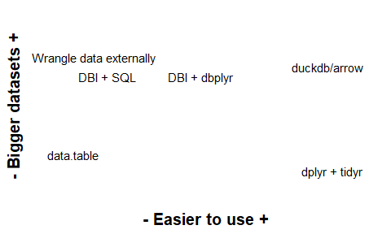
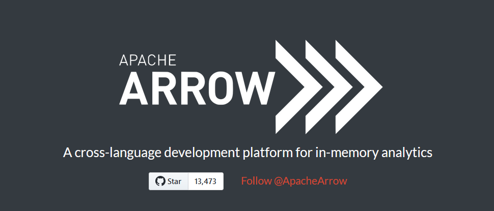
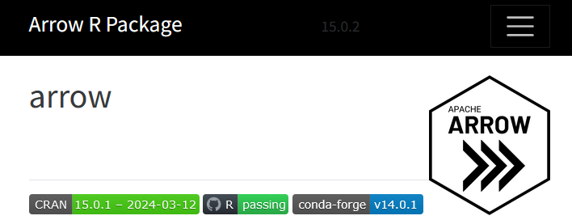
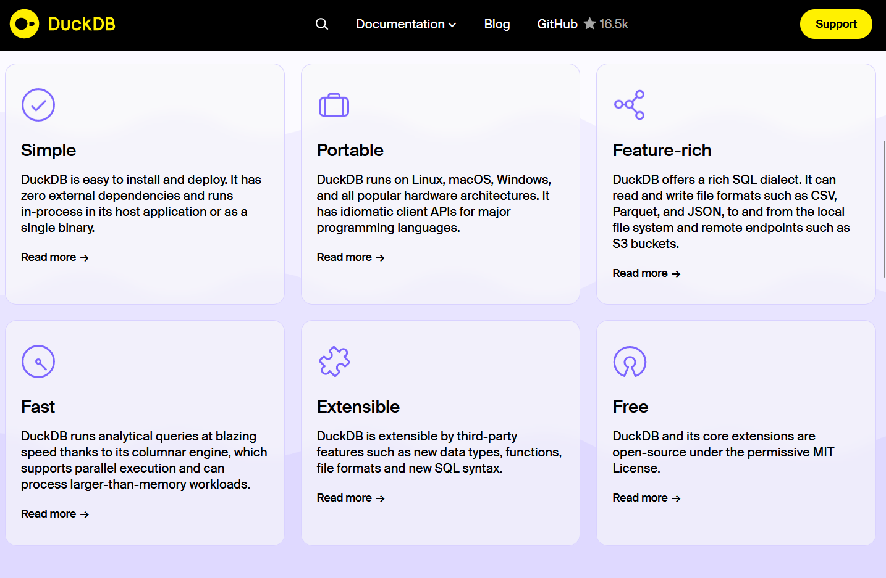
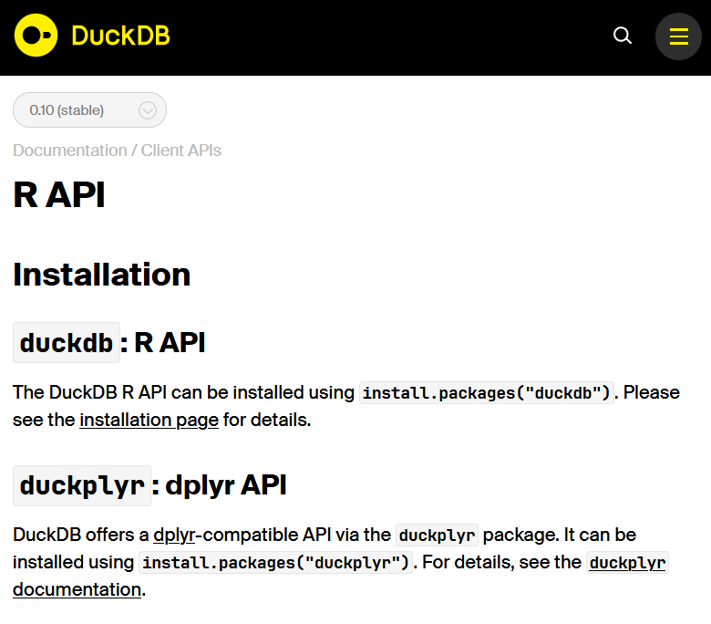
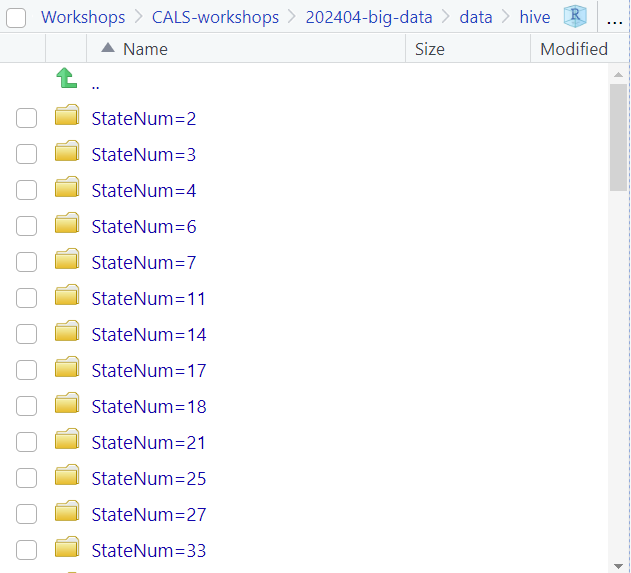
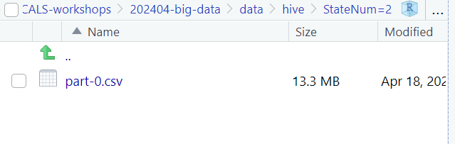

4.33 sec elapsedWrangling larger-than-memory data in R
Renata Diaz
⏰ Schedule ⏰
| Topic | Time |
|---|---|
| Welcome & intros | 11:00 - 11:05 |
| (Really) big data in R: the landscape | 11:05 - 11:10 |
Data storage and access with arrow |
11:15 - 11:30 |
dplyr wrangling with arrow |
11:35 - 11:50 |
| BREAK | 11:50 - 12:00 |
arrow with duckdb | 12:00 - 12:20 | |duckdb` and raw SQL |
12:20-12:35 |
| When to use what | 12:35-12:45 |
| Wrap up | 12:45-1 |
Welcome!
CCT Data Science Team
Supporting reproducible research, data pipelines, and software development in ALVSCE
- Workshops
- Drop-in hours
- “Incubator” program
- Longer-term collaborations
- Learn more: https://datascience.cct.arizona.edu
Before we get started
- These slides (and links!) are available at: NEW LINK HERE
- Please make sure you have R and RStudio installed
- Please install the following packages:
duckdb, arrow, dplyr, tidyr, dbplyr, DBI, here - You can download today’s data here: https://arizona.box.com/s/vrnnys684ttsmnunnw3y8u817jttpre4
Background assumptions
- You do at least some of your data wrangling + analysis in R
- You use
dplyrandtidyr(and you like it!) - Some of your datasets are too large to handle efficiently in R
Learning objectives
- Understand the landscape of tools available for big data in R
- Store and access datasets using the
arrowandduckdbpackages - Scale up
dplyrpipelines usingarrowandduckdb - Understand which tools are suited to which tasks, and where to look for more resources
Big data in R
The (abbreviated) landscape
{fig-alt=“A plot placing different options for data wrangling in R along axes of ease of use and size of data. dplyr and tidyr are easy to use but can only handle small datasets. External data wrangling tools, and DBI plus SQL, can handle big data but are hard to use. arrow and duckdb can handle large amounts of data and are easy to use.”}
Apache arrow
Apache arrow
- Format (columnar data storage = fast!)
- Libraries to interface with many programming languages/platforms
- Emphasis on interoperability
arrowlibraries work with many data formats - you do not need to use parquet/arrow to get performance gains!
arrow R library
duckdb
duckdb
- Database format + API
- “SQLite for analytics”
- Complements arrow
- Handles relational data more naturally than arrow
duckdb and R
Important
You can use either, or both!
Today we will cover arrow and duckdb separately and then show how to combine them.
Today’s data: the Breeding Bird Survey
- Annual counts of birds observed along >2500 monitoring routes throughout United States and Canada.
- These aren’t big big data, but are big enough to show performance gains.
Today’s data: the Breeding Bird Survey
- Download for today: https://arizona.box.com/s/vrnnys684ttsmnunnw3y8u817jttpre4
- Source: Ziolkowski Jr., D.J., Lutmerding, M., Aponte, V.I., and Hudson, M-A.R., 2022, North American Breeding Bird Survey Dataset 1966 - 2021: U.S. Geological Survey data release, https://doi.org/10.5066/P97WAZE5. Summarized.
Loading data using arrow
read.csv vs. read_csv_arrow
read.csv vs. read_csv_arrow
read.csv vs. read_csv_arrow
Important
read_csv_arrow is much faster than read.csv.
Both functions read data into memory and won’t work if your data is too big for R to load.
read.csv vs. open_dataset
read.csv vs. open_dataset
read.csv vs. open_dataset
read.csv vs. open_dataset
read.csv vs. open_dataset
Important
open_dataset connects to the data but does not pull it into memory.
Computations happen with arrow’s C++ library.
To get the results into R, use collect().
Hive partitioning


Hive partitioning
Hive partitioning
Important
Hive partitioning breaks a dataset into many smaller files based on one or more variables.
You can recombine them with open_dataset and it will behave the same as one big file.
This can help with portability.
dplyr pipelines in arrow
Core dplyr verbs
mutate
routes_in_arizona <- birds_arrow_dataset |>
filter(StateNum == 6) |>
select(StateNum, Route) |>
distinct() |>
mutate(StateRoute = paste0(StateNum, "_", Route)) |>
collect()
head(routes_in_arizona)# A tibble: 6 × 3
StateNum Route StateRoute
<int> <int> <chr>
1 6 2 6_2
2 6 9 6_9
3 6 10 6_10
4 6 11 6_11
5 6 12 6_12
6 6 13 6_13 group_by |> summarize
birds_summary <- birds_arrow_dataset |>
filter(StateNum == 6) |>
group_by(StateNum, Route) |>
distinct() |>
summarize(nyears = length(unique(Year)),
nspecies = length(unique(AOU))) |>
collect()Error: Error in summarize_eval(names(exprs)[i], exprs[[i]], ctx, length(.data$group_by_vars) > :
Expression length(unique(Year)) is not an aggregate expression or is not supported in Arrow
Call collect() first to pull data into R.group_by |> summarize
birds_summary <- birds_arrow_dataset |>
filter(StateNum == 6) |>
group_by(StateNum, Route) |>
distinct() |>
summarize(nyears = length(unique(Year)),
nspecies = length(unique(AOU))) |>
collect()Error: Error in summarize_eval(names(exprs)[i], exprs[[i]], ctx, length(.data$group_by_vars) > :
Expression length(unique(Year)) is not an aggregate expression or is not supported in Arrow
Call collect() first to pull data into R.Important
Not all functions are supported!
group_by |> summarize
birds_summary <- birds_arrow_dataset |>
filter(StateNum == 6) |>
group_by(StateNum, Route) |>
distinct() |>
summarize(nyears = n_distinct(Year),
nspecies = n_distinct(AOU)) |>
collect()
head(birds_summary)# A tibble: 6 × 4
# Groups: StateNum [1]
StateNum Route nyears nspecies
<int> <int> <int> <int>
1 6 2 18 70
2 6 9 11 67
3 6 10 6 34
4 6 11 6 82
5 6 12 24 54
6 6 13 20 58join
route_info <- read_csv_arrow(here::here(
"data", "routes.csv")) |>
arrow_table()
arizona_routes <- birds_arrow_dataset |>
filter(StateNum == 6) |>
select(StateNum, Route) |>
distinct() |>
left_join(route_info) |>
collect()Error in `compute.arrow_dplyr_query()`:
! Invalid: Incompatible data types for corresponding join field keys: FieldRef.Name(StateNum) of type int64 and FieldRef.Name(StateNum) of type int32join
route_info <- read_csv_arrow(here::here(
"data", "routes.csv")) |>
arrow_table()
arizona_routes <- birds_arrow_dataset |>
filter(StateNum == 6) |>
select(StateNum, Route) |>
distinct() |>
left_join(route_info) |>
collect()Error in `compute.arrow_dplyr_query()`:
! Invalid: Incompatible data types for corresponding join field keys: FieldRef.Name(StateNum) of type int64 and FieldRef.Name(StateNum) of type int32Important
Arrow is strict about schemas (data types)!
Schemas
Schemas
Modifying a schema
route_schema <- schema(route_info)
route_schema$StateNum <- int64()
route_schema$Route <- int64()
route_info <- read_csv_arrow(here::here(
"data", "routes.csv")) |>
arrow_table(schema = route_schema)
schema(route_info)Schema
CountryNum: int32
StateNum: int64
Route: int64
RouteName: binary
Active: int32
Latitude: double
Longitude: double
Stratum: int32
BCR: int32
RouteTypeID: int32
RouteTypeDetailID: int32join again
arizona_routes <- birds_arrow_dataset |>
filter(StateNum == 6) |>
select(StateNum, Route) |>
distinct() |>
left_join(route_info) |>
collect()
head(arizona_routes)# A tibble: 6 × 11
StateNum Route CountryNum RouteName Active
<int> <int> <int> <arrw_bnr> <int>
1 6 2 840 48, 4f, 55, 53, 45, 20, 52, 4f, 43, 4b 1
2 6 9 840 46, 4c, 41, 47, 53, 54, 41, 46, 46 1
3 6 10 840 4f, 52, 41, 49, 42, 49 1
4 6 11 840 53, 41, 57, 4d, 49, 4c, 4c 1
5 6 12 840 4f, 41, 54, 4d, 41, 4e 1
6 6 13 840 57, 49, 4b, 49, 45, 55, 50 1
# ℹ 6 more variables: Latitude <dbl>, Longitude <dbl>, Stratum <int>,
# BCR <int>, RouteTypeID <int>, RouteTypeDetailID <int>Window functions
arizona_timeseries <- birds_arrow_dataset |>
filter(StateNum == 6, Route == 2) |>
group_by(StateNum, Route, Year) |>
summarize(TotalBirds = sum(StopTotal)) |>
collect()
head(arizona_timeseries)# A tibble: 6 × 4
# Groups: StateNum, Route [1]
StateNum Route Year TotalBirds
<int> <int> <int> <int>
1 6 2 1997 448
2 6 2 1999 340
3 6 2 2004 187
4 6 2 2005 196
5 6 2 2006 248
6 6 2 2007 156Window functions
arizona_timeseries <- birds_arrow_dataset |>
filter(StateNum == 6, Route == 2) |>
group_by(StateNum, Route, Year) |>
summarize(TotalBirds = sum(StopTotal)) |>
mutate(TotalBirdsLastCensus = lag(TotalBirds)) |>
collect()Error: Expression lag(TotalBirds) not supported in Arrow
Call collect() first to pull data into R.Important
Window functions (lag, lead) are not supported.
Window functions
arizona_timeseries <- birds_arrow_dataset |>
filter(StateNum == 6, Route == 2) |>
group_by(StateNum, Route, Year) |>
summarize(TotalBirds = sum(StopTotal)) |>
collect() |>
mutate(TotalBirdsLastCensus = lag(TotalBirds))
head(arizona_timeseries)# A tibble: 6 × 5
# Groups: StateNum, Route [1]
StateNum Route Year TotalBirds TotalBirdsLastCensus
<int> <int> <int> <int> <int>
1 6 2 1997 448 NA
2 6 2 1999 340 448
3 6 2 2004 187 340
4 6 2 2005 196 187
5 6 2 2006 248 196
6 6 2 2007 156 248Reshaping
library(tidyr)
birds_wide <- birds_arrow_dataset |>
filter(StateNum == 6, Route == 2, Year == 1994) |>
select(StateNum, Route, Year, AOU, StopTotal) |>
pivot_wider(names_from = AOU, values_from = StopTotal) |>
collect() Error in UseMethod("pivot_wider"): no applicable method for 'pivot_wider' applied to an object of class "arrow_dplyr_query"dplyr pipelines in arrow
Important
- Many
dplyrfunctions have arrow bindings. - Some have close cousins.
- Some are not implemented.
- For details, see the data wrangling vignette and list of supported dplyr functions in the documentation.
What do I do if a function isn’t supported?
Stay tuned!
Break
arrow + duckdb: Stronger together
duckdb: a reminder
Note
duckdb is a database format with an R API.
duckdb with arrow
- The
duckdbAPI can implement some functions that arrow can’t. - You can pass data between
duckdbandarrowto execute functions from either package with minimal additional overhead.
arrow::to_duckdb
library(tidyr)
birds_wide <- birds_arrow_dataset |>
filter(StateNum == 6, Route == 2) |>
select(StateNum, Route, Year, AOU, StopTotal) |>
arrow::to_duckdb() |>
pivot_wider(id_cols = c(StateNum, Route, Year), names_from = AOU, values_from = StopTotal) |>
collect()
head(birds_wide)# A tibble: 6 × 73
StateNum Route Year `4920` `5600` `5040` `7170` `4200` `7070` `4180` `5650`
<dbl> <dbl> <dbl> <dbl> <dbl> <dbl> <dbl> <dbl> <dbl> <dbl> <dbl>
1 6 2 2005 27 5 NA NA NA NA NA NA
2 6 2 2013 16 2 1 NA NA NA NA 1
3 6 2 2017 37 8 NA NA 1 NA NA NA
4 6 2 2019 56 6 NA NA NA NA NA NA
5 6 2 2010 46 2 2 NA NA NA NA NA
6 6 2 2014 15 2 NA NA NA NA NA NA
# ℹ 62 more variables: `3920` <dbl>, `3250` <dbl>, `5011` <dbl>, `6220` <dbl>,
# `6292` <dbl>, `4470` <dbl>, `3560` <dbl>, `4320` <dbl>, `7150` <dbl>,
# `7331` <dbl>, `7430` <dbl>, `3240` <dbl>, `6560` <dbl>, `4480` <dbl>,
# `3960` <dbl>, `5080` <dbl>, `5690` <dbl>, `5190` <dbl>, `5620` <dbl>,
# `6650` <dbl>, `7490` <dbl>, `3490` <dbl>, `4080` <dbl>, `4620` <dbl>,
# `4250` <dbl>, `7610` <dbl>, `4540` <dbl>, `4740` <dbl>, `4860` <dbl>,
# `4950` <dbl>, `7670` <dbl>, `6150` <dbl>, `7380` <dbl>, `4910` <dbl>, …duckdb as an alternative to arrow
duckdb alone
- You can use
duckdbto wrangle data stored as csv, parquet, and many other file formats, or as a .duckdb database duckdbcan be configured to load data over HTTPS- Unlike
arrow,duckdbnaturally supports multiple related tables stored within one database
duckdb and R: options
duckdbintegrates with theDBIanddbplyrpackages to supportdplyrverbs- The
duckplyrpackage provides a more direct interface toduckdb, but is brand-new
Opening data with duckdb
library(duckdb)
library(DBI)
a_duckdb <- duckdb()
con <- dbConnect(a_duckdb)
duckdb::duckdb_read_csv(conn = con,
name = "all_routes_all_stops",
files = here::here(
"data",
"all_routes_all_stops.csv"))
tbl(con, "all_routes_all_stops") |>
head()# Source: SQL [6 x 5]
# Database: DuckDB v0.10.1 [renatadiaz@Windows 10 x64:R 4.3.1/:memory:]
StateNum Route Year AOU StopTotal
<int> <int> <int> <int> <int>
1 4 1 2000 530 17
2 4 1 2000 534 89
3 4 1 2000 540 10
4 4 1 2000 590 76
5 4 1 2000 1200 2
6 4 1 2000 1320 3dplyr pipelines with duckdb
Important
Use tbl and specify the table name.
duckdb and dbplyr translate dplyr verbs to database syntax.
dplyr pipelines with duckdb
tbl(con, "all_routes_all_stops") |>
filter(StateNum == 6) |>
group_by(StateNum, Route) |>
distinct() |>
summarize(nyears = n_distinct(Year),
nspecies = n_distinct(AOU)) |>
head()# Source: SQL [6 x 4]
# Database: DuckDB v0.10.1 [renatadiaz@Windows 10 x64:R 4.3.1/:memory:]
# Groups: StateNum
StateNum Route nyears nspecies
<int> <int> <dbl> <dbl>
1 6 12 24 54
2 6 17 10 52
3 6 32 24 127
4 6 53 11 47
5 6 56 20 60
6 6 68 16 68Reshaping with duckdb
tbl(con, "all_routes_all_stops") |>
filter(StateNum == 6, Route == 2) |>
select(StateNum, Route, Year, AOU, StopTotal) |>
pivot_wider(id_cols = c(StateNum, Route, Year), names_from = AOU, values_from = StopTotal) |>
collect() |>
head()# A tibble: 6 × 73
StateNum Route Year `4740` `4920` `5738` `5880` `7170` `7331` `7430` `4080`
<int> <int> <int> <int> <int> <int> <int> <int> <int> <int> <int>
1 6 2 1997 33 28 27 23 NA NA NA NA
2 6 2 1999 10 33 33 16 1 8 6 NA
3 6 2 2004 2 9 11 7 NA 3 2 1
4 6 2 2005 2 27 22 7 NA NA 11 NA
5 6 2 2006 10 6 7 13 NA 3 NA NA
6 6 2 2007 2 3 8 13 NA NA NA NA
# ℹ 62 more variables: `7020` <int>, `4910` <int>, `7680` <int>, `4813` <int>,
# `5011` <int>, `5520` <int>, `5600` <int>, `5620` <int>, `6070` <int>,
# `7030` <int>, `4691` <int>, `7380` <int>, `3370` <int>, `5900` <int>,
# `3310` <int>, `5690` <int>, `3250` <int>, `7490` <int>, `5800` <int>,
# `6150` <int>, `3160` <int>, `4320` <int>, `4540` <int>, `4950` <int>,
# `5190` <int>, `7510` <int>, `5650` <int>, `5730` <int>, `6882` <int>,
# `5960` <int>, `6170` <int>, `4200` <int>, `4470` <int>, `3600` <int>, …Raw SQL with duckdb
Writing raw SQL for duckdb
Evaluating SQL in duckdb
Disconnect from db!
In summary
Choosing your tools
arrow |
duckdb |
DBI |
|---|---|---|
| Focus on one big table | Multiple related tables | Custom SQL for specialized/advanced operations |
dplyr-focused workflow |
dplyr + additional verbs |
|
| High value on data interoperability | .duckdb format acceptable |
✨ You can use multiple tools within one workflow!✨
Resources
arrow
duckdb
- DuckDB
- DuckDB R API
- DuckDB + httpfs + duckdbfs (for data access over HTTPS)
- duckplyr
CCT Data Science opportunities
- Drop-in hours - Tuesdays, 9-10
- Incubator projects
- Upcoming workshops
Data science @ UA
- Research Bazaar Arizona
- Coffee & Code
- Hack Hour
- UA Data Science Slack
- Sign up here: https://jcoliver.github.io/uadatascience-slack/user-guide.html
- UA Libraries Data & Viz Drop-In Hours
- UA Data Science Institute
Thank you!
Thank you for attending!
For details on drop-in hours, upcoming workshops, and Incubator Program offerings from CCT-Data Science, see our website!
Please offer feedback through this survey: https://forms.gle/CxAimF4TDWCsHxz19